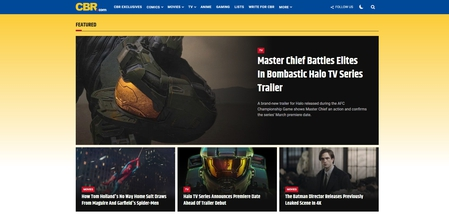

I would like to create a site on my favorite fictional characters. I would like to create an analysis on each and write about my thoughts on each character. Here are some similar websites that inspire me:
CBR.com-is a website that is about animated tv shows, movies and comics. I check the site pretty often if I want to know more about a character.

Another site that I look to is fandom.com, I go to this site to learn more about characters and thier backgrounds
CBR.com-is a website that is about animated tv shows, movies and comics. I check the site pretty often if I want to know more about a character.